{kind=link}
{kind=link}
{kind=link}
{kind=link}
01 · Users need alerts
Live market alerts and trend spotting helped users act faster, and feel more sure about the decision.
REalyse Pulse · A market intelligence platform for real estate
Real estate teams could finally see the market in one place, instead of jumping between five tools. Pulse launched in Q3 2025 as REalyse’s main product, and it gave the company a base to grow both the business and product.
03 · The problem
Developers, lenders, and investors needed a clear answer: where to build, when to buy, and what was worth it. The data was already there, but it sat in separate tools with no shared picture across, analysts, managers, and executives. Every switch between tools cost time, and lost time meant missed deals.
Market data lived fragmented across tools, so every switch meant losing context. Teams didn't want another export; they wanted intelligence they could actually reach in minutes. And a single dashboard for everyone would ignore how differently an analyst, a portfolio manager, and an executive each make decisions.
04 · Research & discovery
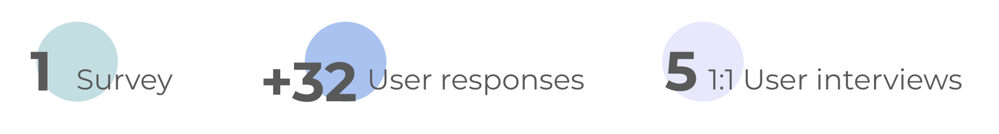
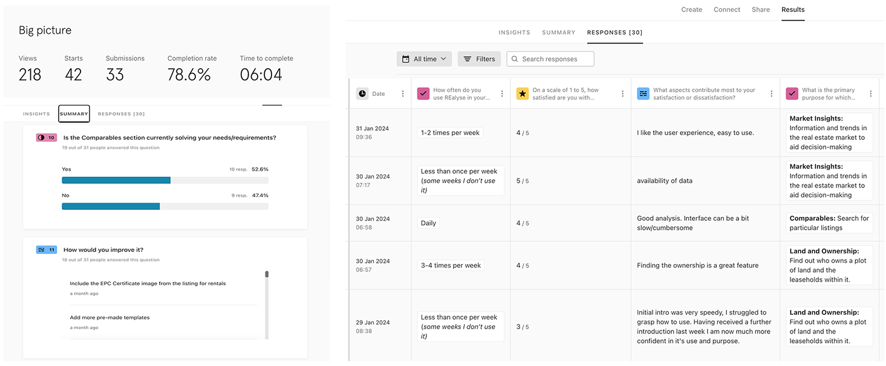
I did this research collaborating with the go-to-market and customer sucess teams. A survey of 32+ people gave us a first read on user needs, and in-depth interviews with developers, lenders, and consultants showed exactly what got in the way. These interviews also strengthened relationships with the customers as they felt heard and valued.
Live market alerts and trend spotting helped users act faster, and feel more sure about the decision.
People cared more about data they could trust with clear signals showing where it came from.
Analysts, managers, and executives each needed a different view of the same data. We needed to built role-based user journeys with tailored views, not a single dashboard trying to serve everyone at once.
They need filters, exports, and templates so they can turn dense data into a report someone else can act on.
They need alerts, trends, and a dashboard that tracks their portfolio against the market. Not a research workbench.
They need a two-minute briefing: the key numbers, how the portfolio is doing, and the bigger market picture. Not hours spent pulling data together.
These sketches helped the team get on the same page. Later tests showed which flows really mattered, especially comparable properties.
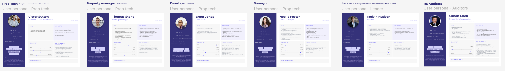
05 · The key insight
Early usability tests made this clear. To trust a valuation, they had to find similar properties nearby and compare size, condition, and features. That step had to be visual, and they had to check each property themselves. Those views helped people reach the comparable.
06 · Process
I worked closely with engineering and data science to try the main user flows. We used simple wireframes and tested the layout and key interactions with 6 people before we invested in a polished design. That helped us decide faster and avoid rework later.
In those sessions we tested four things. How information was ordered on dashboards for each role. How people expected to filter and explore data. How often alerts should appear. And how people compare and benchmark properties.
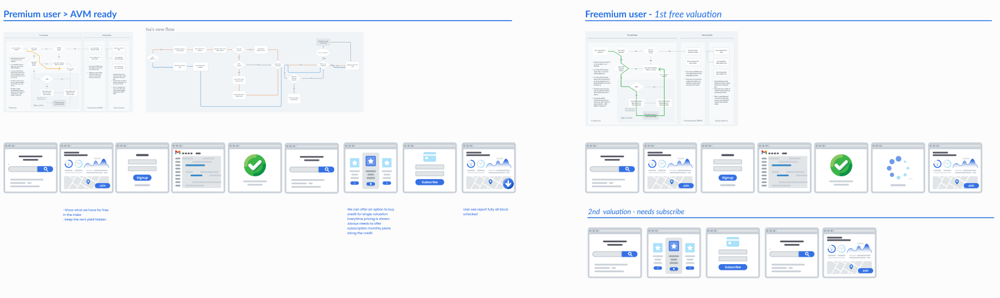
When people judge a property’s value, they look at similar homes nearby and match size, condition, and features. Finding those comparables was the most important step in a REalyse valuation report. It had to be visual, and people wanted to check each property’s details themselves.
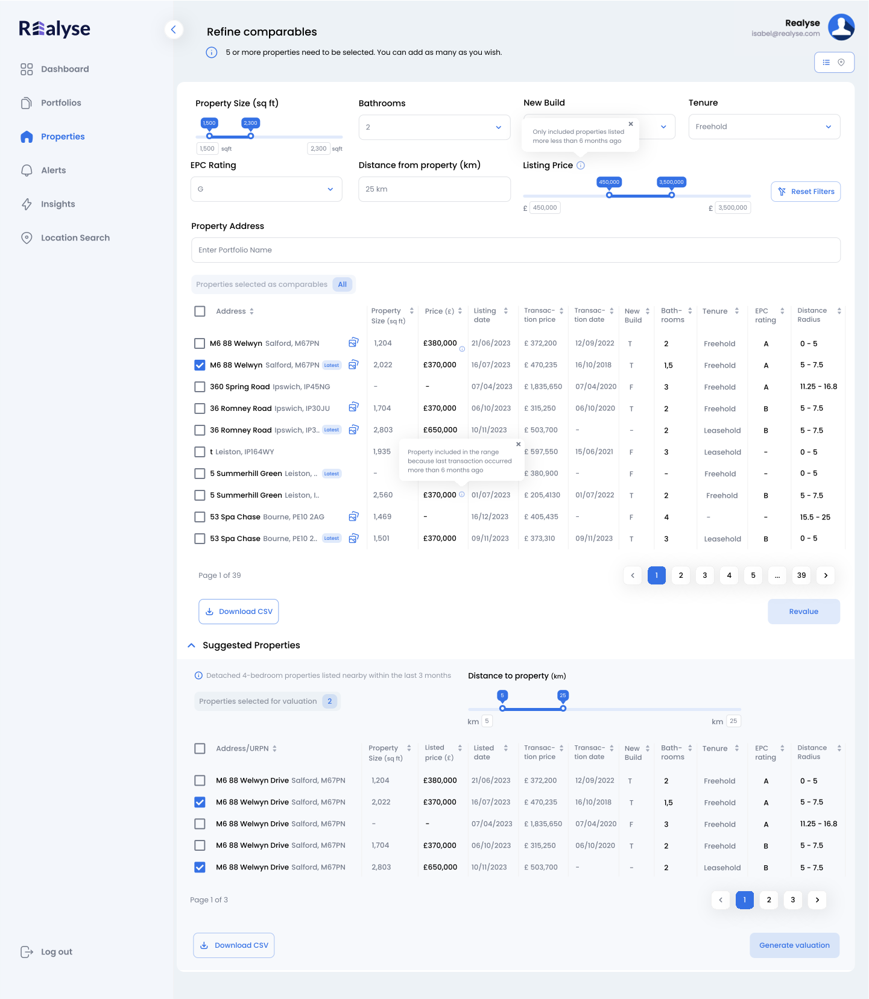
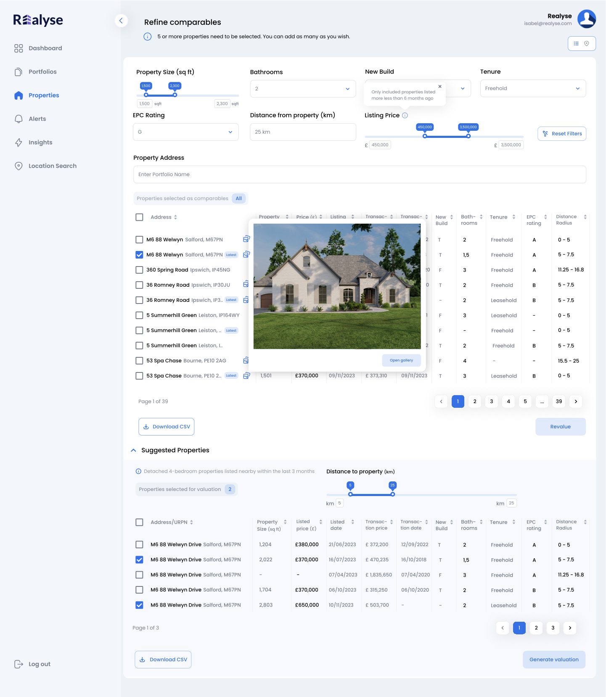
What testing showed. Users needed pictures they could look at, not a row of numbers or a hover that disappeared. They needed to see size, condition, and features before they would trust the valuation.
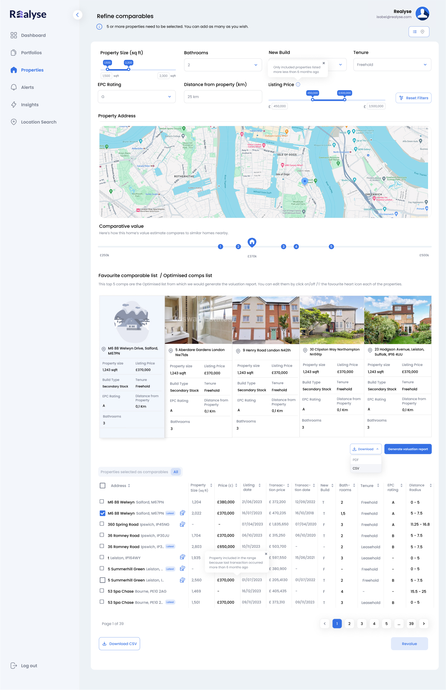
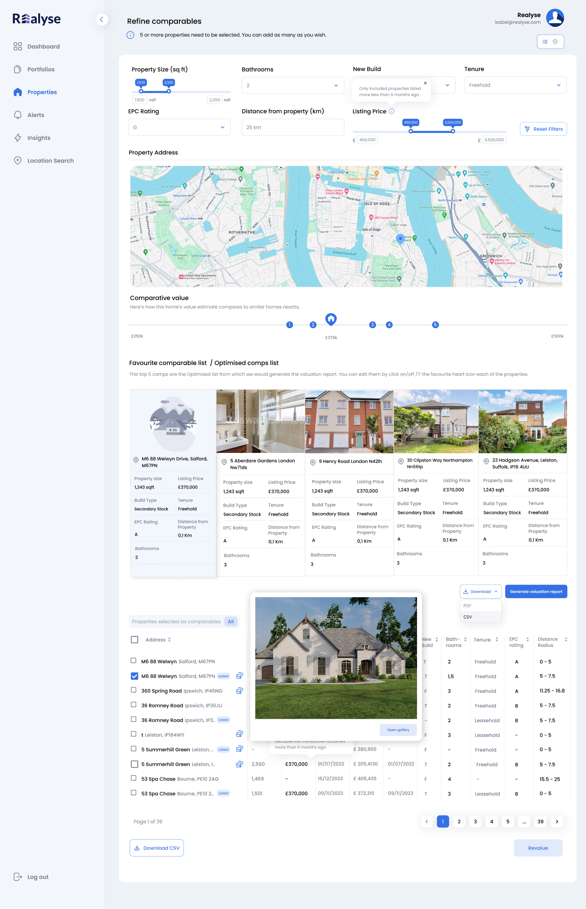
Live market alerts and trend spotting. Using what we learned in testing, I designed different views for each role, all from the same data. Portfolio managers see investment numbers and alerts. Analysts see tools to filter and export. Executives see the big numbers and how the portfolio is doing.
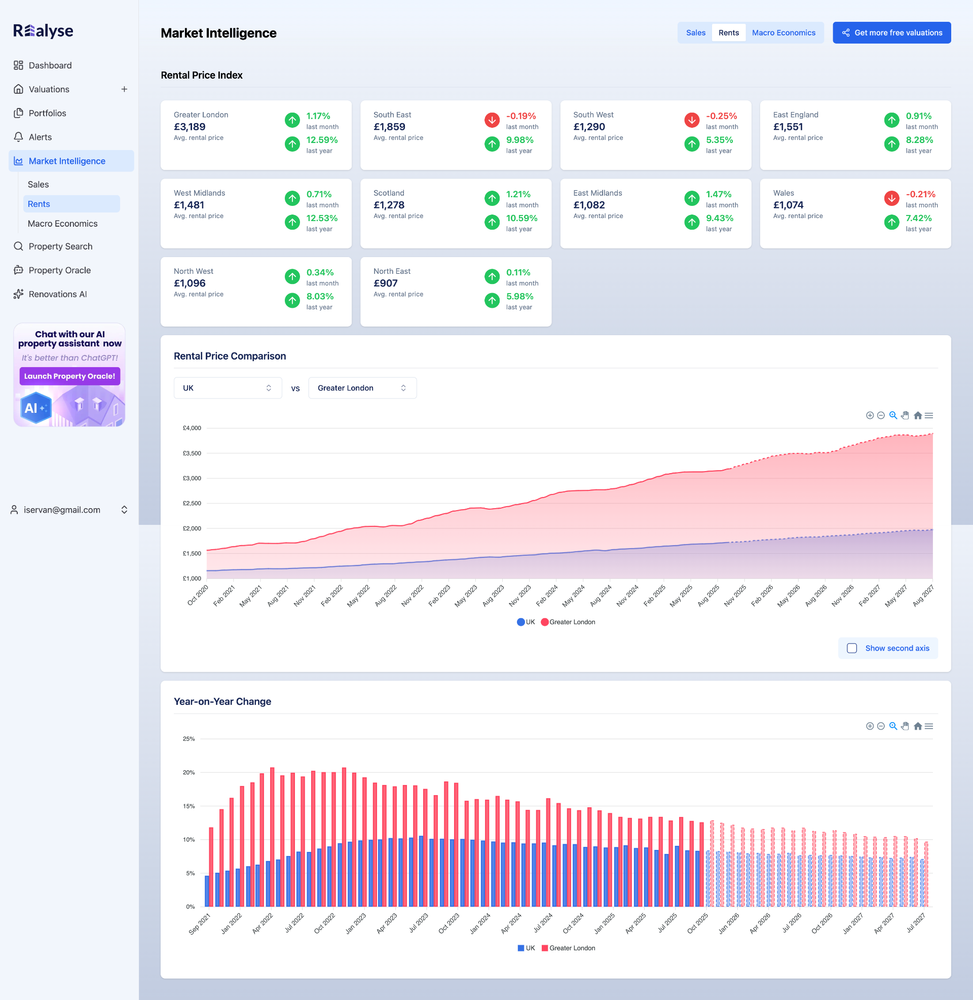
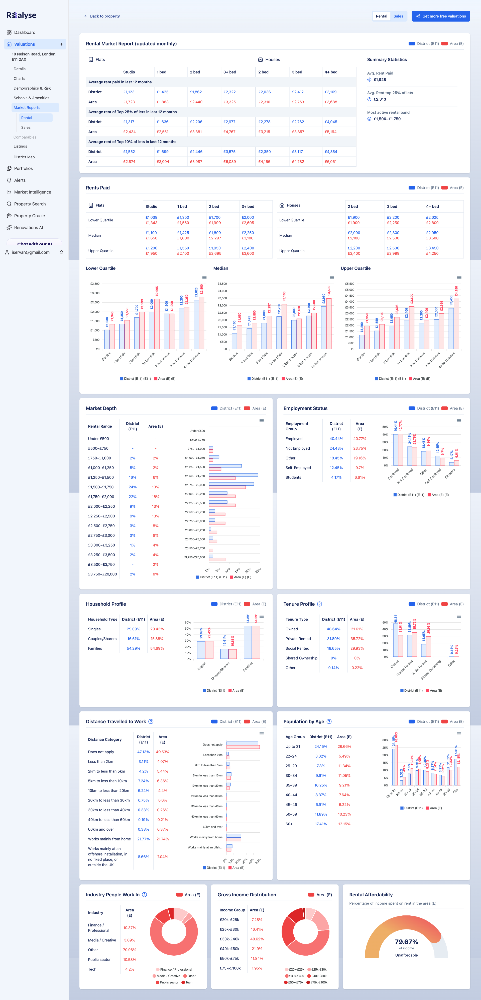
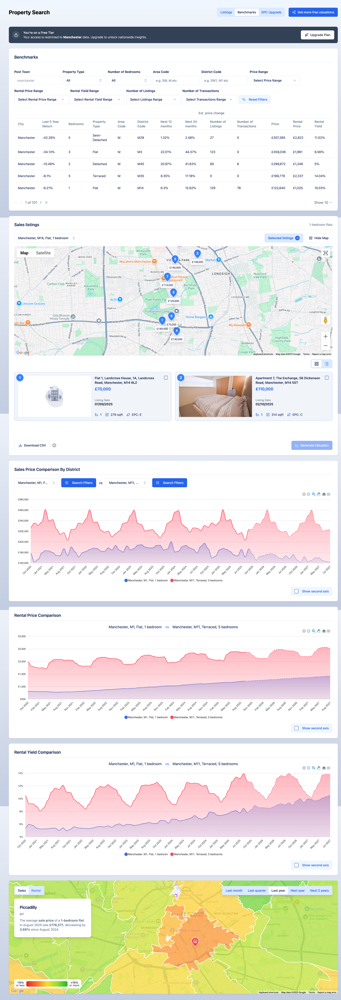
A design system, so the team could grow. To keep improving after launch, I built a design system over shadcn/ui framework. It documents how components look, how interactions work, and how we show data using different visualizations.
07 · Validation & outcome
Testing brought a few useful surprises. The dashboard layouts and filters worked well. Comparables did not. They needed to be more visual and easier to check. Once that step was visual, requests for valuation reports rose 43.7%. Analysts later said they spent about 60% less time putting data into reports.
Once Pulse was live, it became the company’s main market intelligence product. In the first quarter, 73% of users adopted it. That is almost 3 out of every 4 people actively using Pulse and its reports. I also wrote down the components, interaction rules, and rules for charts, so the team could keep building in the same way.
08 · Reflection
I thought the hard part was building one shared dashboard. It was not. The hard part was making a valuation someone would stand behind in a meeting. We only learned that in testing, late enough that the comparable views had to catch up. I fixed it by putting clear, checkable properties at the center of the flow.
{kind=link}
{kind=link}
{kind=link}
{kind=link}
{kind=link}
{kind=link}
{kind=link}
{kind=link}
{kind=link}